UDN
Search public documentation:
UsingSkeletalControllersCH
English Translation
日本語訳
한국어
Interested in the Unreal Engine?
Visit the Unreal Technology site.
Looking for jobs and company info?
Check out the Epic games site.
Questions about support via UDN?
Contact the UDN Staff
日本語訳
한국어
Interested in the Unreal Engine?
Visit the Unreal Technology site.
Looking for jobs and company info?
Check out the Epic games site.
Questions about support via UDN?
Contact the UDN Staff
使用骨架控制器
- 使用骨架控制器
- 概述
- SkelControl节点
- 添加新的 SkelController
- 修改现有的SkelController
- 链接及共享
- 在Unrealscript中引用SkelControl节点
- SkelControl属性
- Limb
- Recoil（反冲）
- 单个骨骼
- SkelControlSingleBone
- SkelControl_Handlebars
- SkelControl_Multiply
- SkelControl_TwistBone
- SkelControlWheel
- UDKSkelControl_Damage / UTSkelControl_Damage
- UDKSkelControl_DamageHinge / UTSkelControl_DamageHinge
- UDKSkelControl_DamageSpring / UTSkelControl_DamageSpring
- UDKSkelControl_HoverboardSuspension / UTSkelControl_HoverboardSuspension
- UDKSkelControl_HoverboardSwing / UTSkelControl_HoverboardSwing
- UDKSkelControl_HoverboardVibration / UTSkelControl_HoverboardVibration
- UDKSkelControl_HugGround / UTSkelControl_HugGround
- UDKSkelControl_PropellerBlade
- UDKSkelControl_Rotate / UTSkelControl_Rotate
- UDKSkelControl_SpinControl / UTSkelControl_SpinControl
- UDKSkelControl_TurretConstrained / UTSkelControl_TurretConstrained
- UDKSkelControl_VehicleFlap
- UTSkelControl_CicadaEngine
- UTSkelControl_JetThruster
- UTSkelControl_MantaBlade
- UTSkelControl_MantaFlaps
- UTSkelControl_Oscillate
- 未分类的节点
- 下载
概述
SkelControl节点
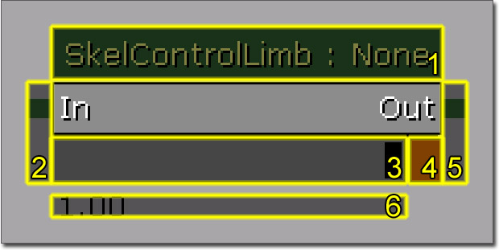
- SkelController节点的名称以及由用户设置的SkelController的名称。
- 为这个SkelController输出连接器。
- 强度滑块，它允许您设置SkelController的强度。
- 会使用由SkelController节点定义的 Blend In Time（淡入时间） 和 Blend Out Time（淡出时间） 混合使强度上升或降低的开关。
- 为这个SkelController输入连接器。
- SkelController的当前强度
添加新的 SkelController
 2. 将会弹出一个组合框，让您选择您希望控制的骨骼。注意，每个骨骼只能有一个控制链：
2. 将会弹出一个组合框，让您选择您希望控制的骨骼。注意，每个骨骼只能有一个控制链：  3. 选择这个Head（头部）骨骼，然后您将会在标为‘Head（头部）’的AnimTree中看到一个新的绿色的连接器：
3. 选择这个Head（头部）骨骼，然后您将会在标为‘Head（头部）’的AnimTree中看到一个新的绿色的连接器：  4. 右击背景，然后新建一个SkelControlLookAt：
4. 右击背景，然后新建一个SkelControlLookAt：  5. 将这个SkelControlLookAt连接 Head（头部）连接器：
5. 将这个SkelControlLookAt连接 Head（头部）连接器： 
修改现有的SkelController

链接及共享
在Unrealscript中引用SkelControl节点
var SkelControl ASkelControl;
var() Name ASkelControlName;
simulated event PostInitAnimTree(SkeletalMeshComponent SkelComp)
{
Super.PostInitAnimTree(SkelComp);
if (SkelComp == Mesh)
{
ASkelControl = Mesh.FindSkelControl(ASkelControlName);
}
}
simulated event Destroyed()
{
Super.Destroyed();
ASkelControl = None;
}
SkelControl属性
某些属性对所有SkelControl是共有的。- Control Name - 这是供程序人员使用的名称，使用它可以从代码中找到特定的SkelControl并修改它。
- Control Strength - 这是该SkelControl的当前强度。
- Blend In Time - SkelControl淡入所需要的时间（以秒为单位）。
- Blend Out Time - SkelControl淡出所需要的时间（以秒为单位）。
- Blend Type - 进行淡入淡出的方式
- Post Physics Controller - 这个SkelControl会在物理渲染后进行应用。
- Set Strength From Anim Node - 如果这个选项为true，那么控制强度将会与给定的AnimNode相同。这样做可以使节点与Controller（控制器）之间的转换变得更容易。
- Controlled By Anim Metadata - 如果该选项为true，那么权重将会默认为 0，同时动画中的元数据将会根据动画权重启用节点。
- Invert Metadata Weight - 如果该选项为true，权重默认为1，那么元数据会将它设置为0，同时禁用骨架控制器。
- Propagate Set Active - 如果该选项为true，那么在将SkelControl激活后，这个链中下一个也会被激活。
- Strength Anim Node Name List - 会轮询的动画节点的列表，会设置这个SkelControl的控制强度。 将它与 Set Strength From Anim Node（通过动画节点设置强度） 结合在一起使用。
- Bone Scale - 允许您对SkelControl作用的骨骼及所有子代骨骼应用缩放。
- Ignore When Not Rendered - 如果网格物体当前没有进行渲染，那么不会应用这个SkelControl。
- Ignore At Or Above LOD - 当Actor上的LOD是这个值或超出这个值的时候禁用SkelControl。
- BCS_WorldSpace - 在世界中的位置。
- BCS_ActorSpace - 相对于Actor原点。
- BCS_ComponentSpace - 相对Skeletal Mesh Component（骨架网格物体组件）原点。
- BCS_ParentBoneSpace - 相对于SkelControl所控制的骨骼的父代骨骼的引用帧。
- BCS_BoneSpace - 相对SkelControl所控制的骨骼。
- BCS_OtherBoneSpace - 相对由骨架层次结构中的用户指定的其他骨骼（在SkelControl中应该有一个 BoneName 选项让您来制定哪一个骨骼）。
Limb
SkelControlLimb
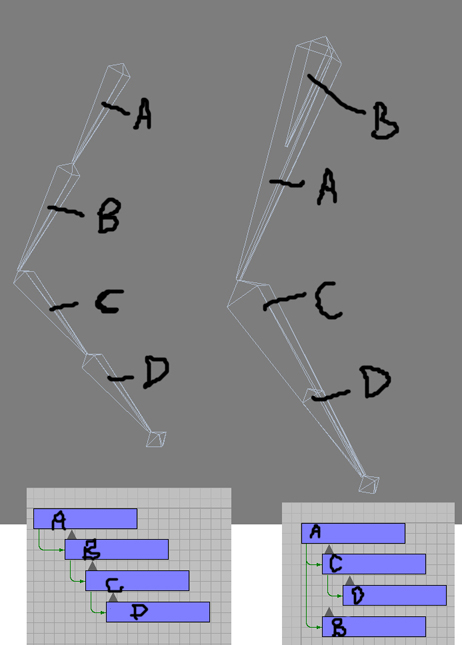
左边的骨骼通常在3D包中，但是对于实时骨架控件没那么高效。 在这个手臂链中，如果您想要将它转换为IK，您将会有一个四个骨骼的IK链，同时您只可以成功获得两个与上面图片中右侧一样的骨骼。这些关节骨骼是这两种情况下的手臂骨骼的子代。差别是左边是从上面的手臂到手的四个骨骼的直观层次结构，而右边是从上面手臂到手的两个骨骼的层次结构。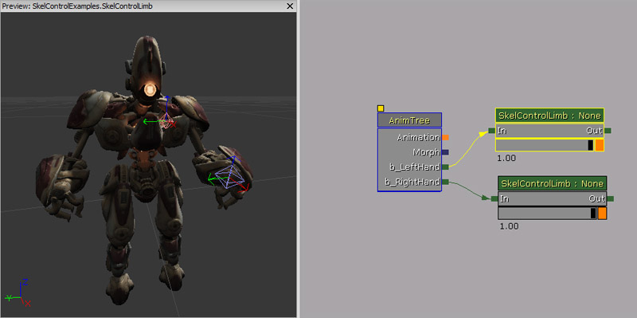
属性
- Effector Location - 受控制的骨骼的理想位置。
- Effector Location Space - 其中定义了 Effector Location 的空间。
- Effector Space Bone Name - 如果 Effector Location Space 是 BCS_OtherBoneSpace，这是要使用的骨骼的名称。
- Joint Target Location - 在弯曲的时候关节将会移向的空间中的位置。
- Joint Target Location Space - 其中定义了 Joint Target Location（关节目标位置） 的空间。
- Joint Target Space Bone Name - 如果 Joint Target Location Space 是 BCS_OtherBoneSpace，这是要使用的骨骼的名称。
- Bone Axis - 在骨骼沿线的肢体中的骨骼的轴线。
- Joint Axis - 应该与关节轴对齐的骨骼的轴。所以，对于肘部 - 它应该是肘弯曲所围绕的轴。
- Invert Bone Axis - 是否应该倒置 Bone Axis（骨骼轴） 向量。
- Invert Joint Axis - 是否应该倒置 Joint Axis（关节轴） 向量。
- Maintain Effector Rel Rot - 如果该选项为true，修改末端效应器骨骼和它的父代骨骼之间的相对旋转量。如果该选项为false，末端骨骼的旋转量将会被这个控制器修改。
在虚幻脚本中如何使用
在这个示例中，通过使用SkelControlLimb制作一个简单的动画；它是一个带有一些权重的pawn。使用SkelControlLimb，将世界空间位置设置为双手的目标。使用动态触发器标记双手应该去的位置。当图标栏使用Matinee向上及向下移动时，动态触发器就好像与图标栏连接在一起会随它一起移动。每次更新后，SkelControlLimbs都会被更新，将 Effector Location 设置为与动态触发器的位置相同。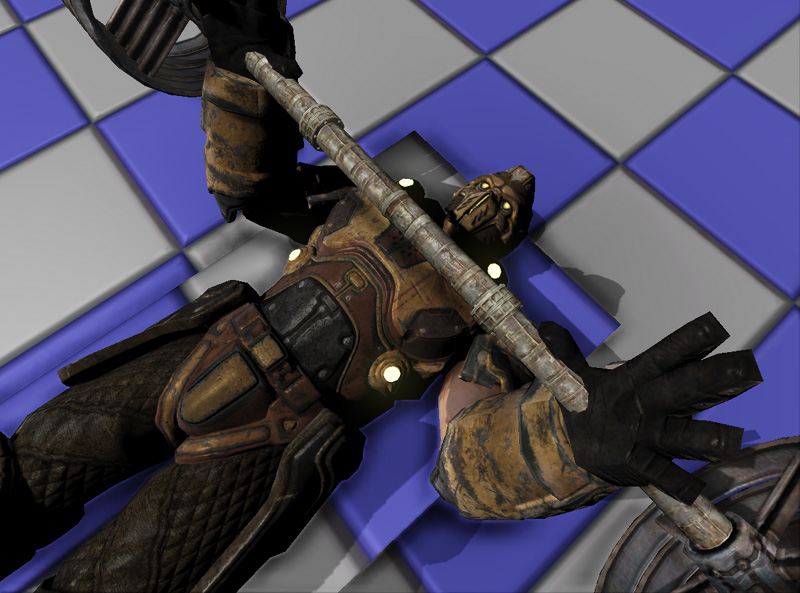
class SkelControlLimbPawn extends Pawn
Placeable;
var(SkelControl) Name LeftArmSkelControlName;
var(SkelControl) Name RightArmSkelControlName;
var(SkelControl) Actor LeftArmAttachment;
var(SkelControl) Actor RightArmAttachment;
var SkelControlLimb LeftArmSkelControl;
var SkelControlLimb RightArmSkelControl;
simulated event PostInitAnimTree(SkeletalMeshComponent SkelComp)
{
Super.PostInitAnimTree(SkelComp);
if (SkelComp == Mesh)
{
LeftArmSkelControl = SkelControlLimb(Mesh.FindSkelControl(LeftArmSkelControlName));
RightArmSkelControl = SkelControlLimb(Mesh.FindSkelControl(RightArmSkelControlName));
}
}
simulated event Destroyed()
{
Super.Destroyed();
LeftArmSkelControl = None;
RightArmSkelControl = None;
}
simulated event Tick(float DeltaTime)
{
Super.Tick(DeltaTime);
if (LeftArmSkelControl != None && LeftArmAttachment != None)
{
LeftArmSkelControl.EffectorLocation = LeftArmAttachment.Location;
}
if (RightArmSkelControl != None && RightArmAttachment != None)
{
RightArmSkelControl.EffectorLocation = RightArmAttachment.Location;
}
}
defaultproperties
{
Begin Object Class=SkeletalMeshComponent Name=PawnMesh
End Object
Mesh=PawnMesh
Components.Add(PawnMesh)
Physics=PHYS_Falling
Begin Object Name=CollisionCylinder
CollisionRadius=+0030.0000
CollisionHeight=+0072.000000
End Object
}
SkelControlFootPlacement

属性
- Foot Offset - 应用于生成的 Effector Location 随着行测试将其拉开的偏移。它允许您调整脚在地面上的高度，因为脚骨骼通常不只在脚掌上。
- Foot Up Axis - 在 Orient Foot To Ground 为true.的情况下，要与表面法线对齐的脚骨骼的轴。
- Foot Rot Offset - 当 Orient Foot To Ground 为true时，应用到脚上的附加旋转量。如果脚骨骼没有指向上方的轴，那么可能会需要使用它。
- Invert Foot Up Axis - 如果为true，我们应该翻转 Foot Up Axis 。
- Orient Foot To Ground - 如果为true，我们应该旋转脚骨骼，这样可以将它本身与被行检查击中的表面法线对齐。
- Max Up Adjustment - 通过SkelControl将脚向上移动的最大量。
- Max Up Adjustment - 通过SkelControl将脚向下移动的最大量。
- Bone Axis - 要沿着骨骼的长度对齐的图形骨骼的轴。
- Joint Axis - 要沿着关节的铰链轴对齐的图形骨骼的轴。
- Invert Bone Axis - 如果您希望在为骨骼构建变换形式的时候倒置 Bone Axis（骨骼轴） ，请将该选项设置为true。
- Invert Joint Axis - 如果您希望在为骨骼构建变换形式的时候倒置 Joint Axis（关节轴） ，请将该选项设置为true。
- Rotate Joint - 对 Rotate Joint（旋转关节） 骨骼的一个实验，而不是为它创建一个新的模型。
- Maintain Effector Rel Rot - 如果该选项为true，修改末端‘效应器’骨骼和它的父代骨骼之间的相对旋转量。如果该选项为false，末端骨骼的旋转量将会被这个控制器修改。
- Take Rotation From Effector Space - 如果该选项为true，效应器骨骼的旋转量将会从 EffectorSpaceBoneName 指定的骨骼中进行复制。
- Left Mouse Button - 沿着X和Y轴平移地板。
- Right Mouse Button - 绕Z轴旋转地板。
- Left + Right Mouse Button - 沿着Z轴平移地板。
高级脚部放置
脚放置SkelController节点为您做了大部分工作，通常在很多情况下您将需要调整并修改脚放置SkelController节点，所以它会根据场景进行相应的调整。网格物体偏移
在平地上创建动画，这样如果角色在比地面高一点的地方行走，那么脚放置代码会将脚升高，这样一切都会看上去比较自然。现在如果碰撞发生在经过动画处理的地面关卡的下面，例如下楼梯，那么脚将会保持在空中，或者腿会伸出来接触到下面的台阶。这样看起来不太好。所以通常游戏性代码会看从双脚到实际地板的最小距离，然后根据这个偏移量移动网格物体，有一点插值可能会对保持平滑有所帮助。 正如你所见，pawn碰撞已经放置了它，所以它处于正确的高度，但是这也意味着这个pawn感觉像是飘着的。为了修正这个问题，可以对网格物体进行平移，强制它向下。在这之后的问题，脚部放置会处理。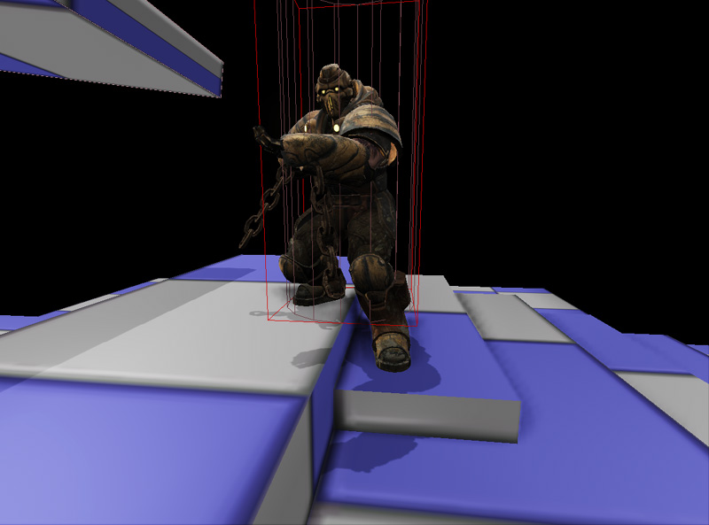
这种方法也适用于斜坡。 代码逻辑规则可以简单地使用那些附加给左右脚部骨骼的插槽的X和Y位置进行跟踪。Z位置是pawn的位置，可以确保轨迹不会穿透pawn所站立的地板。如果已经发现了击中位置，那么计算相应的网格物体平移向量，然后将它传递给网格物体。如果没有检测到地板（可能pawn正在游泳？），那么不会将网格物体平移应用到这个tick(更新)。如果pawn跌倒的话，整个过程也会终止。
代码逻辑规则可以简单地使用那些附加给左右脚部骨骼的插槽的X和Y位置进行跟踪。Z位置是pawn的位置，可以确保轨迹不会穿透pawn所站立的地板。如果已经发现了击中位置，那么计算相应的网格物体平移向量，然后将它传递给网格物体。如果没有检测到地板（可能pawn正在游泳？），那么不会将网格物体平移应用到这个tick(更新)。如果pawn跌倒的话，整个过程也会终止。
class AdvancedFootPlacementPawn extends Pawn
Placeable;
var(FootPlacement) float FootTraceRange;
var(FootPlacement) Name LeftFootSocketName;
var(FootPlacement) Name RightFootSocketName;
var(FootPlacement) float TranslationZOffset;
var(FootPlacement) Name LeftFootPlacementSkelControlName;
var(FootPlacement) Name RightFootPlacementSkelControlName;
var SkelControlFootPlacement LeftFootPlacementSkelControl;
var SkelControlFootPlacement RightFootPlacementSkelControl;
simulated function EnableLeftFootPlacement()
{
SetSkelControlActive(LeftFootPlacementSkelControl, true);
}
simulated function DisableLeftFootPlacement()
{
SetSkelControlActive(LeftFootPlacementSkelControl, false);
}
simulated function EnableRightFootPlacement()
{
SetSkelControlActive(RightFootPlacementSkelControl, true);
}
simulated function DisableRightFootPlacement()
{
SetSkelControlActive(RightFootPlacementSkelControl, false);
}
simulated function SetSkelControlActive(SkelControlBase SkelControl, bool IsActive)
{
if (SkelControl != None)
{
SkelControl.SetSkelControlActive(IsActive);
}
}
simulated event PostInitAnimTree(SkeletalMeshComponent SkelComp)
{
Super.PostInitAnimTree(SkelComp);
if (SkelComp == Mesh)
{
LeftFootPlacementSkelControl = SkelControlFootPlacement(Mesh.FindSkelControl(LeftFootPlacementSkelControlName));
RightFootPlacementSkelControl = SkelControlFootPlacement(Mesh.FindSkelControl(RightFootPlacementSkelControlName));
}
}
simulated event Destroyed()
{
Super.Destroyed();
LeftFootPlacementSkelControl = None;
RightFootPlacementSkelControl = None;
}
simulated event Tick(float DeltaTime)
{
local Vector LeftFootHitLocation, LeftFootHitNormal, LeftFootTraceEnd, LeftFootTraceStart;
local Vector RightFootHitLocation, RightFootHitNormal, RightFootTraceEnd, RightFootTraceStart;
local Vector DesiredMeshTranslation;
local Rotator SocketRotation;
local Actor LeftFootHitActor, RightFootHitActor;
Super.Tick(DeltaTime);
if (Mesh == None || Physics == PHYS_Falling)
{
return;
}
Mesh.GetSocketWorldLocationAndRotation(LeftFootSocketName, LeftFootTraceStart, SocketRotation);
LeftFootTraceStart.Z = Location.Z;
LeftFootTraceEnd = LeftFootTraceStart - (Vect(0.f, 0.f, 1.f) * FootTraceRange);
// 跟踪查找左脚的位置
ForEach TraceActors(class'Actor', LeftFootHitActor, LeftFootHitLocation, LeftFootHitNormal, LeftFootTraceEnd, LeftFootTraceStart,,, TRACEFLAG_Bullet)
{
// 如果我们击中了世界几何体会挡住去路
if (LeftFootHitActor.bWorldGeometry || LeftFootHitActor.IsA('InterpActor'))
{
break;
}
}
// 跟踪查找右脚的位置
Mesh.GetSocketWorldLocationAndRotation(RightFootSocketName, RightFootTraceStart, SocketRotation);
RightFootTraceStart.Z = Location.Z;
RightFootTraceEnd = RightFootTraceStart - (Vect(0.f, 0.f, 1.f) * FootTraceRange);
// 跟踪查找右脚的位置
ForEach TraceActors(class'Actor', RightFootHitActor, RightFootHitLocation, RightFootHitNormal, RightFootTraceEnd, RightFootTraceStart,,, TRACEFLAG_Bullet)
{
// 如果我们击中了世界几何体会挡住去路
if (RightFootHitActor.bWorldGeometry || RightFootHitActor.IsA('InterpActor'))
{
break;
}
}
// 不在接触到地面的范围内
if (LeftFootHitActor == None && RightFootHitActor == None)
{
return;
}
if (LeftFootHitActor != None && RightFootHitActor == None)
{
DesiredMeshTranslation.Z = (LeftFootHitLocation.Z - Location.Z) + Mesh.default.Translation.Z + TranslationZOffset;
}
else if (LeftFootHitActor == None && RightFootHitActor != None)
{
DesiredMeshTranslation.Z = (RightFootHitLocation.Z - Location.Z) + Mesh.default.Translation.Z + TranslationZOffset;
}
else
{
// 调整理想的网格物体平移量
if (LeftFootHitLocation.Z < RightFootHitLocation.Z)
{
DesiredMeshTranslation.Z = (LeftFootHitLocation.Z - Location.Z) + Mesh.default.Translation.Z + TranslationZOffset;
}
else
{
DesiredMeshTranslation.Z = (RightFootHitLocation.Z - Location.Z) + Mesh.default.Translation.Z + TranslationZOffset;
}
}
// 设置网格物体平移量
Mesh.SetTranslation(DesiredMeshTranslation);
}
defaultproperties
{
LeftFootSocketName="LeftFootSocket"
RightFootSocketName="RightFootSocket"
FootTraceRange=96.f
Begin Object Class=SkeletalMeshComponent Name=PawnMesh
End Object
Mesh=PawnMesh
Components.Add(PawnMesh)
Physics=PHYS_Falling
Begin Object Name=CollisionCylinder
CollisionRadius=+0030.0000
CollisionHeight=+0072.000000
End Object
}
移动时的脚部位置
在移动时(不仅是静止不动时)完成脚步放置的唯一方法是考虑到脚步骨骼和动画水平地面(通常由根骨骼的位置表现)的偏移量(高度)。现在不用把脚部骨骼移动到地面的实际存在的地方，我们仅需要为脚部骨骼添加一个偏移量，即动画地面高度和实际地面高度之间的差值。现在动画可以正确地抬起脚，并且可以随着世界的不同而适应。它需要一些插值，使过程变得平滑，从而使网格物体的偏移看上去令人满意，它是放置脚部位置的一种非常简单的方式，并且可以运行的很好。由于您正在监测脚部下面的地面，所以系统会稍稍有些滞后。改善这个问题的一种方法便是预测脚部将要落下的位置，但是那将需要一个更加复杂的系统来分析运动动画，从而来正确地预测脚部将要落下的位置。以下是使用战争机器2代码的原型系统的屏幕截图：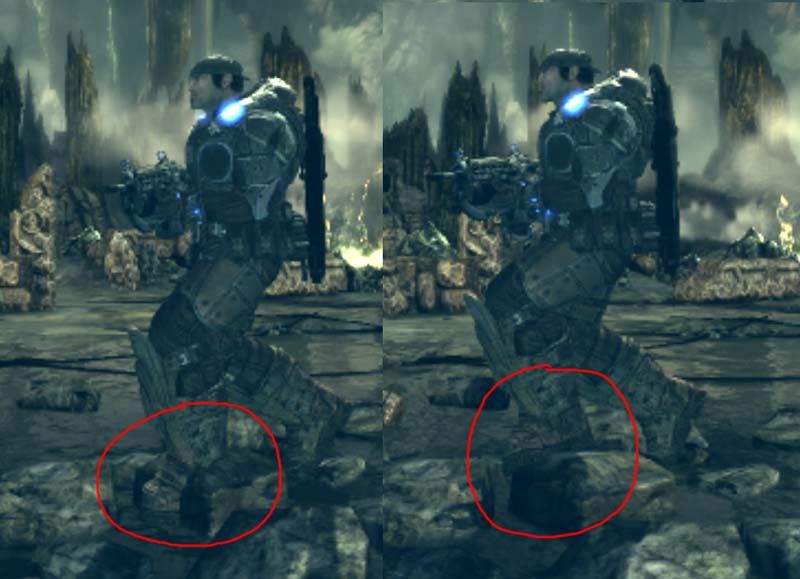
Floor Conforming（地面贴合）
Floor Conforming(地面贴合)是根据地面的倾斜调整人物 和/或 他的脚部的方向，以便使他的脚部和地面倾斜相平行。获得这种效果的一个简单方法是通过在人物骨架中设置一个IK Foot Bone (IK脚部骨骼)。基本上一个"IK Foot Root(IK脚部根骨骼)"源于"Root Bone(根骨骼)"，"IK Foot Right", "IK Foot Left"骨骼可以在动画的每一帧中精确地匹配脚部骨骼。然后通过平移和旋转"IK Foot Root"骨骼，使得脚部运动朝向和地面斜坡方向相适应变得非常容易。这次也一样，需要对其进行插值和网格物体偏移从而使它看上过渡平滑。另外，可以旋转整个网格物体来调整人物的躯干来适应地面倾斜及斜面的变化，使其看上去更加自然。（当移动时向斜面的方向倾斜，当停止时向斜面的反方向倾斜）。在瞄准代码中对网格物体旋转进行补偿是非常容易的，这样可以保证人物可以瞄准到空间中的给定点。以下是使用战争机器2代码的原型系统的屏幕截图：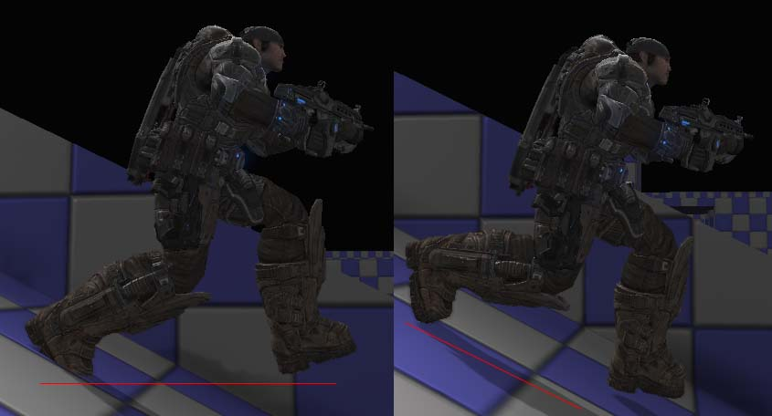
Moving Bases（移动基座）
当人物站在移动基座或者称为Mover(移动物体)上时，如果Mover 突然旋转，那么人物将会出现打滑或者完全地从地面分离的现象。运行上面讨论的地面贴合系统是有帮助的，但是人物仍然会相对于基座打滑，脚部看上去根本就不是接地的。为什么会这样？ 这是因为虚幻引擎为Pawn碰撞使用了AABB(沿坐标轴对齐排列的边界盒)。以便那个边界盒不跟着Mover一同旋转。而更糟糕的是，当Mover旋转时，会把边界盒向上及向下推动。然而仅需一点点数学知识，便可以很容易地计算脚步放置的位置并进行必要的补偿。您也必须保证Mover在Pawn之前被ticked(更新)。以下是使用战争机器2代码的原型系统的屏幕截图：
Recoil（反冲）
GameSkelControl_Recoil

属性
- Bone Space Recoil - 如果为true，忽略目标，只要在本地骨骼空间中应用反冲就可以。
- Play Recoil - 会启用反冲的激活状态。
- Recoil - 反冲信息。
- Time Duration - 反冲摇动的持续时间（以秒为单位）。
- Rot Amplitude - 旋转振幅向量。
- Rot Frequency - 旋转频率向量。
- Rot Params - 旋转参数。
- Loc Amplitude - 位置偏移振幅向量。
- Loc Frequency - 位置偏移频率向量。
- Loc Params - 位置参数。
- Aim - 瞄准向量，形式为 [-1.f, 1.f : -1.f, 1.f]
在虚幻脚本中如何使用
在这个示例中，pawn将会每0.2秒向链接枪支开火，而手臂将会由于武器开火而产生反冲力作用。
class SkelControlRecoilPawn extends Pawn
Placeable;
var() Name RecoilSkelControlName;
var() float FireRate;
var GameSkelCtrl_Recoil RecoilSkelControl;
simulated event PostInitAnimTree(SkeletalMeshComponent SkelComp)
{
Super.PostInitAnimTree(SkelComp);
if (SkelComp == Mesh)
{
RecoilSkelControl = GameSkelCtrl_Recoil(Mesh.FindSkelControl(RecoilSkelControlName));
}
SetTimer(FireRate, true, NameOf(PlayRecoil));
}
simulated event Destroyed()
{
Super.Destroyed();
RecoilSkelControl = None;
}
simulated function PlayRecoil()
{
if (RecoilSkelControl != None)
{
RecoilSkelControl.bPlayRecoil = true;
}
}
defaultproperties
{
FireRate=0.2f
Begin Object Class=SkeletalMeshComponent Name=PawnMesh
End Object
Mesh=PawnMesh
Components.Add(PawnMesh)
Physics=PHYS_Falling
Begin Object Name=CollisionCylinder
CollisionRadius=+0030.0000
CollisionHeight=+0072.000000
End Object
}
单个骨骼
SkelControlSingleBone

属性
- Apply Translation - 表示对平移是否应该进行一些操作。如果为false，将会忽略所有其他平移设置。
- Add Translation - 如果为true，会将特定的平移量添加给动画的结果。如果为false，它会替换进行动画处理的平移量。
- Bone Translation - 应用到骨骼上的平移量。
- Bone Translation Space - 应用到平移量上的空间。
- Translation Space Bone Name - 如果 Bone Location Space 是 BCS_OtherBoneSpace，这是要使用的骨骼的名称。
- Apply Rotation - 对于 Apply Translation（应用平移） 选项，它必须为true。旋转量改变才会生效。
- Add Rotation - 如果为true，会将旋转量添加到动画效果中。如果为false，会替换现有旋转量。
- Bone Rotation - 应用到骨骼上的实际旋转量。
- Bone Rotation Space - 在其中应用了骨骼旋转量的参考帧。
- Rotation Space Bone Name - 如果 Bone Rotation Space 为 BCS_OtherBoneSpace，那么这是要使用的骨骼的名称。
在虚幻脚本中如何使用
在这个示例中，pawn旋转它的脊柱骨来面向你。
class SkelControlSingleBonePawn extends Pawn
Placeable;
var() Name SkelControlSingleBoneName;
var SkelControlSingleBone SkelControlSingleBone;
simulated event PostInitAnimTree(SkeletalMeshComponent SkelComp)
{
Super.PostInitAnimTree(SkelComp);
if (SkelComp == Mesh)
{
SkelControlSingleBone = SkelControlSingleBone(Mesh.FindSkelControl(SkelControlSingleBoneName));
}
}
simulated event Destroyed()
{
Super.Destroyed();
SkelControlSingleBone = None;
}
simulated event Tick(float DeltaTime)
{
local PlayerController PlayerController;
local Rotator R;
Super.Tick(DeltaTime);
if (SkelControlSingleBone != None)
{
PlayerController = GetALocalPlayerController();
if (PlayerController != None && PlayerController.Pawn != None)
{
R = Rotator(Location - PlayerController.Pawn.Location);
SkelControlSingleBone.BoneRotation.Yaw = R.Yaw;
}
}
}
defaultproperties
{
Begin Object Class=SkeletalMeshComponent Name=PawnMesh
End Object
Mesh=PawnMesh
Components.Add(PawnMesh)
Physics=PHYS_Falling
Begin Object Name=CollisionCylinder
CollisionRadius=+0030.0000
CollisionHeight=+0072.000000
End Object
}
SkelControl_Handlebars

属性
- Wheel Roll Axis - 会围绕它发生方向盘转动的轴。
- Handlebar Rotate Axis - 会围绕它进行方向控制的轴。
- Wheel Bone Name - 旋转量将会控制方向的骨骼的名称。
- Invert Rotation - 会倒置旋转量应用到被控制的骨骼上。
SkelControl_Multiply

属性
- Multiplier - 可以表示在之前的骨架混合中叠加多少的浮点数。
SkelControl_TwistBone

属性
- Source Bone Name - 要查看的源骨骼名称。如果您之前将左前方手臂骨骼作为这个SkelControl的源，那么您就要将它设置为左手骨骼。
- Twist Angle Scale - 缩放旋转角度的程度。
SkelControlWheel
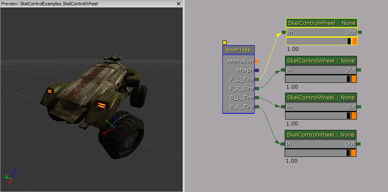
属性
- WheelDisplacement - 它只用于预览车轮的垂直运动。设置这个数值将会抬高车轮。
- WheelMaxRenderDisplacement - 它是车轮将会被移动的最大垂直距离。使用它确保车轮将永远不会插入到底盘几何体中。
- WheelRoll - 与WheelDisplacement类似，使用它来预览车轮转圈。一个正的值应该会使车轮转圈，就好像车在向前移动一样。
- WheelRollAxis - 车轮应该围绕转圈的车轮骨骼的轴。
- WheelSteering - 用于预览车轮的转向运动。正的值应该会移动车轮使其指向右方。
- WheelSteeringAxis - 车轮应该围绕旋转来进行转向的车轮骨骼的轴。
- InvertWheelRoll - 为转圈倒置旋转量。
- InvertWheelSteering - 为转向倒置旋转量。
UDKSkelControl_Damage / UTSkelControl_Damage

虚幻编辑器中显示的变量
- On Damage Active - OnDamage功能是否处于激活状态。
- Damage Bone Scale - 缩放这个骨骼上的受损部分的值。
- Damage Max - 在死亡之前这个骨架控件可以经受的损坏程度。
- Activation Threshold - 如果健康目标在这个阙值之上，那么这个控件将会处于非激活状态。
- Control Str Follows Health - 一旦被激活后，这个骨架控制器就会将这个控件力量生成为一个健康还有剩余的产品，或者它一直处于满格状态。
- Break Mesh（断开网格物体） - 当这个骨架控制器断开时要产生的静态网格物体。
- Break Threshold - 在弹簧开始看上去好像要断开的时候的阙值。
- Break Time（撕裂时间） - 从开始撕裂到完全断开所花费的时间。
- Default Break Dir - 在碎裂的时候，请使用这个选项建立向量。
- Damage Scale(损坏比例) - 生成的载具部分所使用的比例。（例如，我们有一个静态网格物体资源，但是它是在一个从中心向下镜像的载具上不同位置生成的。）
- PS_Damage On Break - 当这部分断开的时候要生成的粒子系统。
- PS_Damage Trail - 当这部分去除的时候要附加的粒子系统。（例如，一股黑色刺鼻蔓延的烟雾踪迹！）。
- Break Speed - 在将这部分破碎以清除载具的时候强制将这部分升高。
- On Death Active - OnDeath功能是否处于激活状态。
- On Death Use For Secondary Explosion - OnDeath功能是否处于激活状态可以进行第二次爆炸。
- Death Percent To Actually Spawn - 这是在OnDeath处于激活状态的情况下这部分将会实际生成的百分比。
- Death Bone Scale - 在死亡时缩放这个骨骼的值。
- Death Static Mesh - 在死亡时生成的静态网格物体。
- Death Impulse Dir - 生成的载具将会飞的方向。
- Death Scale - 在生成的部分使用的缩放比例。 （例如，我们有一个静态网格物体资源，但是它是在一个从中心向下镜像的载具上不同位置生成的。）
- PS_Death On Break - 当这部分断开的时候要生成的粒子系统。
- PS_Death Trail - 当这部分去除的时候要附加的粒子系统。（例如，一股黑色刺鼻蔓延的烟雾踪迹！）。
UnrealScript函数
- BreakApart(vector PartLocation, bool bIsVisible) - 当弹簧决定断开的时候触发的事件。
- PartLocation - 这部分的世界位置。
- bIsVisible - 可以决定这部分是否仍然可见。
- BreakApartOnDeath(vector PartLocation, bool bIsVisible) - 当弹簧彻底断开的时候触发的事件。
- PartLocation - 这部分的世界位置。
- bIsVisible - 可以决定这部分是否仍然可见。
- RestorePart() - 当这部分恢复正常时会触发该事件。
UDKSkelControl_DamageHinge / UTSkelControl_DamageHinge
虚幻编辑器中显示的变量
- Max Angle - 这个铰链可以打开的角度的最大值，以度为单位。
- Pivot Axis - 这个铰链围绕打开的轴。
- AV Modifier - 用来计算这个铰链的角度的角速度将会乘以这个值。它应该始终是负数。
UDKSkelControl_DamageSpring / UTSkelControl_DamageSpring
虚幻编辑器中显示的变量
- Max Angle - 这个弹簧可以张开的角度的最大值，以度为单位。
- Min Angle - 这个弹簧可以张开的角度的最小值，以度为单位。
- Falloff - 弹簧恢复到正常的速度。
- Spring Stiffness - 弹簧的硬度
- AV Modifier - 用来计算这个铰链的角度的角速度将会乘以这个值。它应该始终是负数。
UDKSkelControl_HoverboardSuspension / UTSkelControl_HoverboardSuspension

属性
- Trans Ignore - 忽略的垂直平移量。
- Trans Scale - 会缩放垂直平移量。
- Trans Offset - 垂直平移量要偏移的量。
- Max Trans - 要应用的最大垂直平移量。
- Min Trans - 要应用的最小垂直平移量。
- Rot Scale - 会缩放应用在Y轴上的旋转量。模拟在悬浮板下半部分的悬架所应用的旋转量。
- Max Rot - 可以应用在Y轴上的最大旋转量。
- Max Rot Rate - 每秒钟应用的最大旋转率。
UDKSkelControl_HoverboardSwing / UTSkelControl_HoverboardSwing
属性
- Swing History Window - 设置摇摆历史记录窗口的大小。
- Swing Scale - 缩放摇摆量。
- Max Swing - 用于计算最后的摇摆量的摇摆最大值（各个方向）。
- Max Use Vel - 用于计算最终的摇摆量的速度最大值（各个方向）。
UDKSkelControl_HoverboardVibration / UTSkelControl_HoverboardVibration
属性
- Vib Frequency - 用于模拟振动的频率。
- Vib Speed Amp Scale - 用于根据线性速度放大振动。
- Vib Turn Amp Scale - 用于根据角速度放大振动。
- Vib Max Amplitude - 用于将振动约束为一个最大振幅。
UDKSkelControl_HugGround / UTSkelControl_HugGround

属性
- Desired Ground Dist - 从骨骼到地面的理想距离。
- Max Dist - 这个骨骼可以从它的正常位置移动的最大距离。
- Parent Bone - 一个骨骼的可选名称，受控制的骨骼将会一直向这个骨骼的方向旋转。
- Opposite From Parent - 如果这一项为true，那么在父代骨骼相反的方向旋转这个骨骼，而不是在同一个方向。
- XY Dist From Parent Bone - 如果 ParentBone 已经指定，而且大于0，那么将会完全保留受控制的骨骼，很多单元将会远离它。
- Z Dist From Parent Bone - 如果 ParentBone 已经指定，而且大于0，那么将会完全保留受控制的骨骼，很多单元将会远离它。
- Max Translation Per Sec - BoneTranslation 每秒钟可以变化的最大量。
UDKSkelControl_PropellerBlade
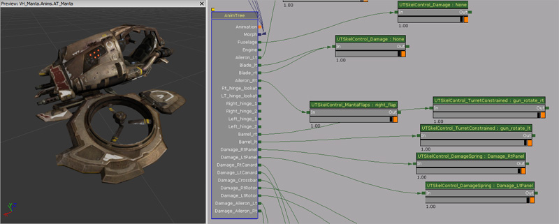
属性
- Max Rotations Per Second - 定义螺旋桨可以起转的最大旋转率。
- Spin Up Time - 要起转到最大旋转率的时间。
- Counter Clockwise - 如果您希望螺旋桨叶片逆时针起转，那么将这个选项设置为true。
UDKSkelControl_Rotate / UTSkelControl_Rotate
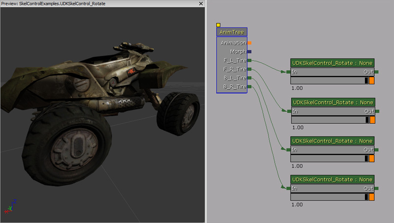
属性
- Desired Bone Rotation - 骨骼应该旋转到的预期骨骼旋转量。
- Desired Bone Rotation Rate - 在旋转骨骼时应用的期望旋转率。
UDKSkelControl_SpinControl / UTSkelControl_SpinControl
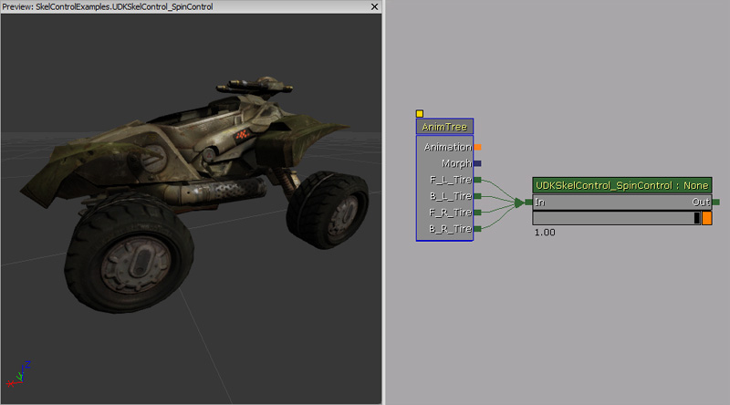
属性
- Degrees Per Second - 定义每秒钟要旋转骨骼的度数。
- Axis - 如果这个轴的所有值为0，那么这个控制器什么都不能做。对轴进行单位化， 这样骨骼的旋转就不会超过Degrees Per Second。
- X - 在X轴上旋转骨骼。您可以使用一个负值来进行逆时针旋转。
- Y - 在Y轴上旋转骨骼。您可以使用一个负值来进行逆时针旋转。
- Z - 在Z轴上旋转骨骼。您可以使用一个负值来进行逆时针旋转。
UDKSkelControl_TurretConstrained / UTSkelControl_TurretConstrained
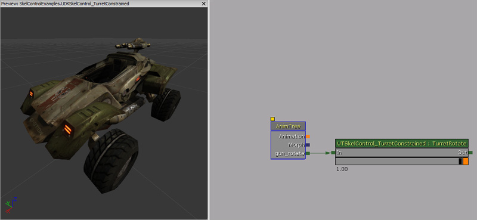
属性
- Constrain Pitch - 如果该选项为true，那么将会对倾斜程度加以约束。
- Constrain Yaw - 如果该选项为true，那么将会对偏转程度加以约束。
- Constrain Roll - 如果该选项为true，那么将会对翻转程度加以约束。
- Invert Pitch - 如果该选项为true，那么将会反转倾斜程度。
- Invert Yaw - 如果该选项为true，那么将会反转偏转程度。
- Invert Roll - 如果该选项为true，那么将会反转翻转程度。
- Max Angle - 最大角度，以度为单位。
- Pitch Constraint - 最大倾斜约束。
- Yaw Constraint - 最大偏转约束。
- Roll Constraint - 最大翻转约束。
- Min Angle - 最小角度，以度为单位。
- Pitch Constraint - 最小倾斜约束。
- Yaw Constraint - 最大偏转约束。
- Roll Constraint（翻转约束）
- Steps - 允许每个炮塔都有各种可以在其中约束数据的步骤。
- StepStartAngle - 如果当前角度（以度为单位）等于或大于这个值；那么会激活这一步。
- StepEndAngle - 如果当前角度（以度为单位）等于或小于这个值；那么会激活这一步。
- MaxAngle - 最大角度（以度为单位）。
- Pitch Constraint - 最大倾斜约束。
- Yaw Constraint - 最大偏转约束。
- Roll Constraint - 最大翻转约束。
- MinAngle - 最小角度（以度为单位）。
- Pitch Constraint - 最小倾斜约束。
- Yaw Constraint - 最小偏转约束。
- Roll Constraint - 最小翻转约束。
- Lag Degrees Per Second - 在将炮塔的旋转量更新为期望的旋转量时炮塔滞后的时间（以秒为单位）。
- Pitch Speed Scale - 倾斜速度修改器。
- Desired Bone Rotation - 骨骼应该旋转到的预期旋转量。
- Fixed When Firing - 如果该选项为true，那么在与炮塔连接的座位当前正在使用的情况下这个炮塔不会更新。
- Associated Seat Index - 与这个控件相连的座位索引。
- Reset When Unattended - 如果该选项为true，那么这个炮塔将会在没有玩家控制这个炮塔的时候重置为 0, 0, 0。
UnrealScript 函数
- OnTurretStatusChange(bool bIsMoving) - 在炮塔的状态发生改变时调用的代理。
- bIsMoving - 在炮塔移动的时候该选项为true。
- InitTurret(Rotator InitRot, SkeletalMeshComponent SkelComp) - 初始化炮塔，这样它当前的方向就是它想要指向的路。
- InitRot - 初始化到的旋转量。
- SkelComp - 附加这个控制器的骨架网格物体组件。
- WouldConstrainPitch(int TestPitch, SkeletalMeshComponent SkelComp) - 在给定的倾斜程度会被这个控制器限制的情况下返回true。
- TestPitch - 要测试的倾斜程度，以虚幻rotator（旋转量）为单位。
- SkelComp - 附加这个控制器的骨架网格物体组件。
UDKSkelControl_VehicleFlap
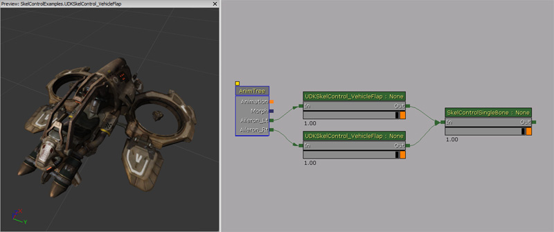
属性
- Max Pitch - 在各个方向上可以应用到骨骼上的最大倾斜改变。
UTSkelControl_CicadaEngine
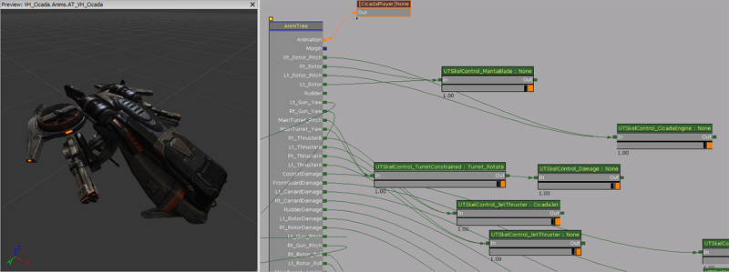
属性
- Forward Pitch - 它会保存引擎可以倾斜的最大量。
- Back Pitch - 它会保存引擎可以倾斜的最小量。
- Pitch Rate - 骨骼改变它的倾斜程度的速度。
- Max Velocity - 最大速度。
- Min Velocity - 最小速度。
- Max Velocity Pitch Rate Multiplier - Modifier for the pitch rate used for calculating the pitch movement rate.
UTSkelControl_JetThruster

属性
- Max Forward Velocity - 最大前进速度。
- Blend Rate - 混合期望的控制强度的速率。
UTSkelControl_MantaBlade
UTSkelControl_MantaFlaps
UTSkelControl_Oscillate
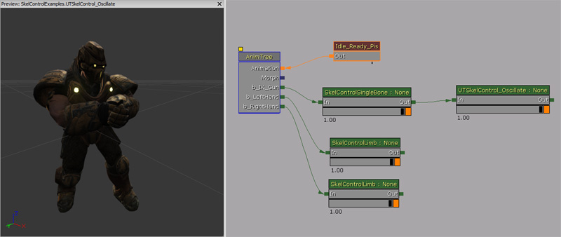
属性
- Max Delta - 要移动这个骨骼的最大量。
- Period - 从开始位置（没有delta）到MaxDelta所需要的时间量。
- Current Time - 震荡的当前时间。通常不需要在虚幻编辑器中对它进行调整。
未分类的节点
SkelControl_CCDIK
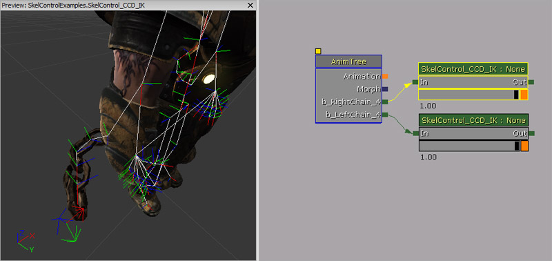
属性
- Num Bones - 会影响到的骨骼数。
- Max Per Bone Iterations - 性能控制，允许我们触摸每一块骨骼的次数。
- Precision - 要考虑到达的目标的距离，以Unreal Units（虚幻单位）为单位。很明显，如果您可以容忍一些错误，它会帮助提高这个节点的性能。
- Start From Tail - 从链的前面或背面开始。提供不同的视觉效果。
- Angle Constraint - Radian（弧度）角度的数列。允许每个骨骼可以形成的最大角度。
- Max Angle Steps - 允许每一个步长可以形成的最大旋转角度。通过强制小旋转量步长沿着骨骼链平均分布可以帮助防止出现重叠效果。
在虚幻脚本中如何使用
在这个示例中，附加到角色手臂上的骨骼链将会尝试指向你（用玩家的pawn代表）。
class SkelControlCCDIKPawn extends Pawn
Placeable;
var() Name LeftSkelControlCCDIKName;
var() Name RightSkelControlCCDIKName;
var SkelControl_CCD_IK LeftSkelControlCCDIK;
var SkelControl_CCD_IK RightSkelControlCCDIK;
simulated event PostInitAnimTree(SkeletalMeshComponent SkelComp)
{
Super.PostInitAnimTree(SkelComp);
if (SkelComp == Mesh)
{
LeftSkelControlCCDIK = SkelControl_CCD_IK(Mesh.FindSkelControl(LeftSkelControlCCDIKName));
RightSkelControlCCDIK = SkelControl_CCD_IK(Mesh.FindSkelControl(RightSkelControlCCDIKName));
}
}
simulated event Destroyed()
{
Super.Destroyed();
LeftSkelControlCCDIK = None;
RightSkelControlCCDIK = None;
}
simulated event Tick(float DeltaTime)
{
local PlayerController PlayerController;
Super.Tick(DeltaTime);
if (LeftSkelControlCCDIK != None && RightSkelControlCCDIK != None)
{
PlayerController = GetALocalPlayerController();
if (PlayerController != None && PlayerController.Pawn != None)
{
LeftSkelControlCCDIK.EffectorLocation = PlayerController.Pawn.Location;
RightSkelControlCCDIK.EffectorLocation = PlayerController.Pawn.Location;
}
}
}
defaultproperties
{
Begin Object Class=SkeletalMeshComponent Name=PawnMesh
End Object
Mesh=PawnMesh
Components.Add(PawnMesh)
Physics=PHYS_Falling
Begin Object Name=CollisionCylinder
CollisionRadius=+0030.0000
CollisionHeight=+0072.000000
End Object
}
SkelControlLookAt

属性
- Target Location - 骨骼应该指向的空间中的位置。
- Target Location Space - 其中定义了 Target Location（目标位置） 的空间。
- Target Space Bone Name - 如果 Target Location Space 是 BCS_OtherBoneSpace，这是要使用的骨骼的名称。
- Look At Axis - 决定受控制的骨骼是否应该指向目标的轴。
- Invert Look At Axis - 会通知 Look At Axis 远离目标而不是指向目标。
- Define Up Axis - 如果该选项为false，这个控件将会找到将 Look At Axis 指向目标所需要的最小旋转量。围绕这个轴的翻转还是会从动画中得来。如果该选项为true，同时还会定义这个骨骼垂直方向上的轴，所以在这之后这个骨骼的方位完全由这个控制器进行定义。
- Up Axis - 如果 Define Up Axis 为true，那么这是应该在世界空间中向上指的骨骼的轴。
- Invert Up Axis - Up Axis 是否应该向下指而不是向上指。
- Enable Limit - 我们是否应该限制允许骨骼旋转以便来追踪它的目标的最大角度。
- Show Limit - 我们是否应该在选择这个控件之后在3D视图窗口中绘制这个绿色限制锥体。
- Max Angle - 距离允许这个骨骼进行旋转的参考姿势的最大角度，以度为单位。
- Dead Zone Angle - 如果目标在当前旋转量的死亡区域角范围内，那么将不会进行更新。这个骨骼将只会在目标移动超出死亡区域的时候才会进行旋转。
在虚幻脚本中如何使用
在这个示例中，一个pawn将会看着你（更确切地说，是你所控制的pawn）。当您超出它的视线范围时，它会混合后面，这样这个pawn就会向前看。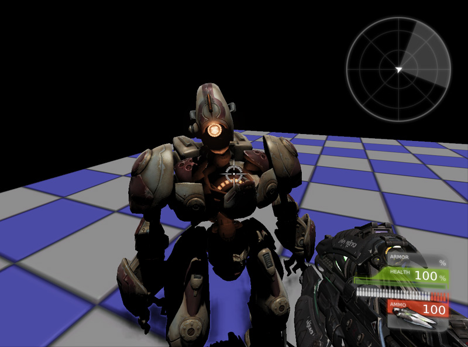
class SkelControlLookAtPawn extends Pawn;
var() Name SkelControlLookAtName;
var() float EyeOffset;
var SkelControlLookAt SkelControlLookAt;
simulated event PostInitAnimTree(SkeletalMeshComponent SkelComp)
{
Super.PostInitAnimTree(SkelComp);
if (SkelComp == Mesh)
{
SkelControlLookAt = SkelControlLookAt(Mesh.FindSkelControl(SkelControlLookAtName));
}
}
simulated event Destroyed()
{
Super.Destroyed();
SkelControlLookAt = None;
}
simulated event Tick(float DeltaTime)
{
local PlayerController PlayerController;
Super.Tick(DeltaTime);
if (SkelControlLookAt != None)
{
PlayerController = GetALocalPlayerController();
if (PlayerController != None && PlayerController.Pawn != None)
{
SkelControlLookAt.TargetLocation = PlayerController.Pawn.Location + (Vect(0.f, 0.f, 1.f) * EyeOffset);
}
}
}
defaultproperties
{
Begin Object Class=SkeletalMeshComponent Name=PawnMesh
End Object
Mesh=PawnMesh
Components.Add(PawnMesh)
Physics=PHYS_Falling
Begin Object Name=CollisionCylinder
CollisionRadius=+0030.0000
CollisionHeight=+0072.000000
End Object
}
SkelControlSpline
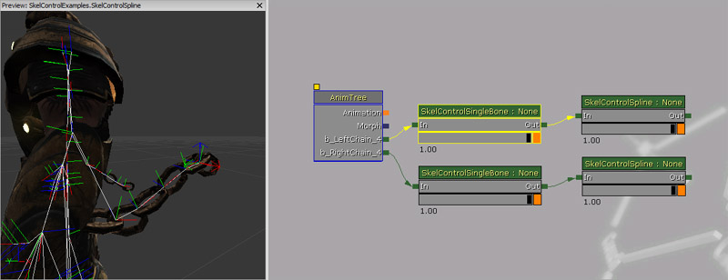
属性
- Spline Length - 要沿着层次结构走并修改使其与一个样条曲线相适应的骨骼的数量。
- Spline Bone Axis - 要指向样条曲线的骨骼的轴。
- Invert Spline Bone Axis - 是否应该快速翻转 Spline Bone Axis（样条骨骼轴） 。
- End Spline Tension - 控制样条曲线末端（接近受控制的骨骼）的弯曲程度。
- Start Spline Tension - 控制样条曲线开头的弯曲程度。
- Bone Rot Mode - 控制骨骼沿着样条曲线的长度旋转的方式。更多信息请见下文。
- SCR_NoChange - 没有修改骨骼的旋转情况，只是平移它们，使它们在样条曲线上。
- SCR_AlongSpline - 旋转骨骼，这样它们的SplineBoneAxis会指向这个样条曲线。
- SCR_Interpolate - 每个连续的骨骼的旋转量都是在骨骼链的任一端的骨骼的旋转量之间的混合物。
SkelControlTrail
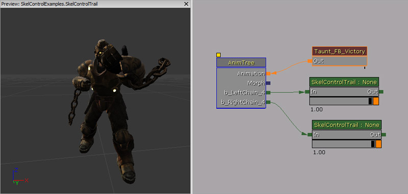
属性
- Chain Length - 要修改的在层次结构中在受控制骨骼上面的骨骼数量。
- Chain Bone Axis - 指向尾迹的骨骼的轴。
- Invert Chain Bone Axis - 颠倒在 Chain Bone Axis 中指定的方向
- Limit Stretch - 限制一个骨骼可以从它的参考姿势长度中拉伸的量。
- Actor Space Fake Vel - 仿造速度是否应该在actor或世界空间中使用。
- Trail Relaxation - 骨骼放松到它们进行动画处理的位置的速度。
- Stretch Limit - 如果启用 Limit Stretch（限制拉伸） ，这代表一个骨骼可以拉伸比它在参考姿势中的长度超出多少。
- Fake Velocity - 应用到骨骼上的仿造速度。
示例
在这个示例中，尾迹的仿造Z速度会每2秒钟在向上和向下之间进行混合。
class SkelControlTrailPawn extends Pawn
Placeable;
var() Name SkelControlTrailLeftName;
var() Name SkelControlTrailRightName;
var() float SinkVelocityZ;
var() float FloatVelocityZ;
var SkelControlTrail SkelControlTrailLeft;
var SkelControlTrail SkelControlTrailRight;
simulated event PostInitAnimTree(SkeletalMeshComponent SkelComp)
{
Super.PostInitAnimTree(SkelComp);
if (SkelComp == Mesh)
{
SkelControlTrailLeft = SkelControlTrail(Mesh.FindSkelControl(SkelControlTrailLeftName));
SkelControlTrailRight = SkelControlTrail(Mesh.FindSkelControl(SkelControlTrailRightName));
}
SetTimer(2.f, false, NameOf(SinkTrail));
}
simulated event Destroyed()
{
Super.Destroyed();
SkelControlTrailLeft = None;
SkelControlTrailRight = None;
}
simulated event Tick(float DeltaTime)
{
Super.Tick(DeltaTime);
if (SkelControlTrailLeft != None && SkelControlTrailRight != None)
{
if (IsTimerActive(NameOf(FloatTrail)))
{
SkelControlTrailLeft.FakeVelocity.Z = Lerp(FloatVelocityZ, SinkVelocityZ, GetTimerCount(NameOf(FloatTrail)) / GetTimerRate(NameOf(FloatTrail)));
SkelControlTrailRight.FakeVelocity.Z = Lerp(FloatVelocityZ, SinkVelocityZ, GetTimerCount(NameOf(FloatTrail)) / GetTimerRate(NameOf(FloatTrail)));
}
else if (IsTimerActive(NameOf(SinkTrail)))
{
SkelControlTrailLeft.FakeVelocity.Z = Lerp(SinkVelocityZ, FloatVelocityZ, GetTimerCount(NameOf(SinkTrail)) / GetTimerRate(NameOf(SinkTrail)));
SkelControlTrailRight.FakeVelocity.Z = Lerp(SinkVelocityZ, FloatVelocityZ, GetTimerCount(NameOf(SinkTrail)) / GetTimerRate(NameOf(SinkTrail)));
}
}
}
simulated function FloatTrail()
{
if (SkelControlTrailLeft != None && SkelControlTrailRight != None)
{
SkelControlTrailLeft.FakeVelocity.Z = FloatVelocityZ;
SkelControlTrailRight.FakeVelocity.Z = FloatVelocityZ;
}
SetTimer(2.f, false, NameOf(SinkTrail));
}
simulated function SinkTrail()
{
if (SkelControlTrailLeft != None && SkelControlTrailRight != None)
{
SkelControlTrailLeft.FakeVelocity.Z = SinkVelocityZ;
SkelControlTrailRight.FakeVelocity.Z = SinkVelocityZ;
}
SetTimer(2.f, false, NameOf(FloatTrail));
}
defaultproperties
{
Begin Object Class=SkeletalMeshComponent Name=PawnMesh
End Object
Mesh=PawnMesh
Components.Add(PawnMesh)
Physics=PHYS_Falling
Begin Object Name=CollisionCylinder
CollisionRadius=+0030.0000
CollisionHeight=+0072.000000
End Object
}
UDKSkelControl_CantileverBeam / UTSkelControl_CantileverBeam

属性
- Initial World Space Goal Offset - 从初始骨骼开始，在这里获取World Space Goal（世界空间目标）（在本地骨骼空间中）的开始位置。
- Spring Stiffness - 定义应用在弹簧模型上的刚度。
- Spring Damping - 定义应用在弹簧模型上的阻尼。
-
Percent Beam Velocity Transfer - 我们希望横梁顶端获取基础速度的百分比。
UnrealScript 函数
- EntireBeamVelocity() - 返回整个光束传播的速度。（一个针对坦克示例的代理，其中我们希望整个坦克都起作用，而不仅仅是炮塔转动）。
详细说明
这个Skeletal Controller（骨架控制器）需要在东西的Skeletal Mesh（骨架网格物体）端耍些花招，使它看上去是一个在应用“weight（权重）”的时候混合而成的可弯曲的管子。花招指的是在骨架网格物体中对定点加权的方式。骨架网格物体有两个骨骼。骨骼的位置基本不会造成什么影响，但是跟骨骼在分支骨骼的下面。 所以设想一下这是一个管子，用 | 代表管子上的分段符。|====|====|====|====|====|====|====|那么，Bone01（根）的权重设置如下： 0.f, 0.125f, 0.25f, 0.375f, 0.5f, 0.625f, 0.75f, 0.875f, 1.f Bone02（分支）的权重设置如下： 1.f, 0.875f, 0.75f, 0.625f, 0.5f, 0.375f, 0.25f, 0.125f, 0.f 下一步您需要做的操作是在Bone02上使用Skeletal Controller（骨架控制器）。现在，这个骨架控制器本身看上去有一个您可以在AnimTree中调整的 Look At Target（查看目标） 。如果将 Spring Stiffness（弹簧刚度） 和 Spring Damping（弹簧阻尼） 设置为某些特定值，那么它会尝试将 Look At Target（查看目标） 返回为 Initial World Space Goal Offset（初始世界空间目标偏移） 。通常会将设置为管子的顶部，但是如果需要不同的效果可以将它设置在不同的地方。 只要您完成了这项操作，您就获得了可以在 Target Location（目标位置） 到处移动的时候混合的可弯曲管子。由于弹簧设置，它会尝试返回到它的初始位置。
UDKSkelControl_LockRotation / UTSkelControl_LockRotation

属性
- Lock Pitch - 会锁定要作用的骨骼旋转量的倾斜分量。
- Lock Yaw - 会锁定要作用的骨骼旋转量的偏转分量。
- Lock Roll - 会锁定要作用的骨骼旋转量的翻转分量。
- Lock Rotation - 要锁定到的旋转量。
- Max Delta - 为了达到Lock Rotation（锁定旋转量）可以进行更改的初始旋转量的最大值。
- Lock Rotation Space - 该旋转量所在的空间。
- Rotation Space Bone Name - 在LockRotationSpace为BCS_OtherBoneSpace的情况下使用的骨骼的名称。
UDKSkelControl_LookAt / UTSkelControl_LookAt

属性
- Limit Yaw - 如果该选项为true，那么会将限制值应用到偏转轴。否则会忽略限制值。
- Limit Pitch - 如果该选项为true，那么会将限制值应用到倾斜轴。否则会忽略限制值。
- Limit Roll - 如果该选项为true，那么会将限制值应用到翻转轴。否则会忽略限制值。
- Yaw Limit - 偏转轴的角度限制值，以度为单位。
- Pitch Limit - 倾斜轴的角度限制值，以度为单位。
- Roll Limit - 翻转轴的角度限制值，以度为单位。
- Show Per Axis Limits - 如果该选项为true，那么绘制一个代表每个轴限制值的锥形。
UDKSkelControl_MassBoneScaling / UTSkelControl_MassBoneScaling
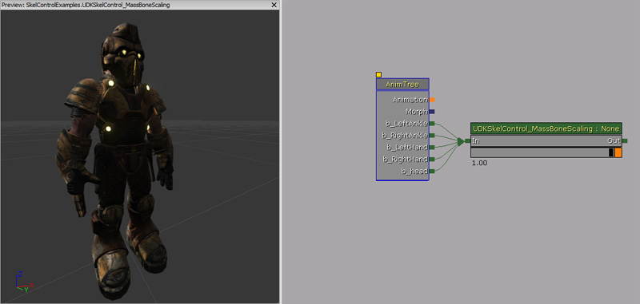
属性
- Bone Scales - 骨架网格物体中的骨骼的缩放比例。这个数列的索引与骨架网格物体骨骼索引匹配。要找出一个骨骼的索引，您可以通过打开相关的骨架网格物体的AnimSet编辑器来查索引。这个骨骼索引就是骨骼名称旁边的数字。
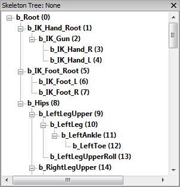
UnrealScript 函数
- SetBoneScale(name BoneName, float Scale) - 按照名称设置骨骼的缩放比例。必须将该控制器与它的AnimTree中指定的骨骼相连才能起作用。
- Node Name - 要作用的骨骼的名称。
- Scale - 要作用的骨骼的比例。
- GetBoneScale(name BoneName) - 会返回该控件对给定骨骼采用的比例。它不会考虑率任何其他正在作用于这个骨骼的比例的控制器。
- Bone Name - 用来返回这个骨骼的比例的名称。